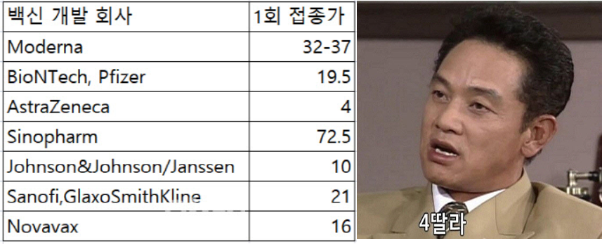
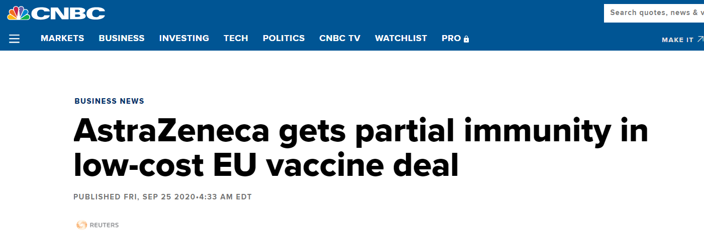
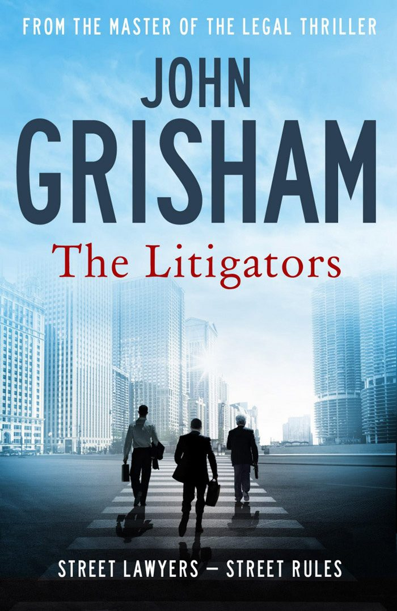
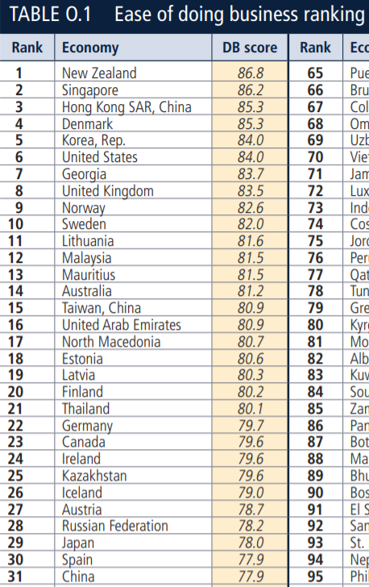
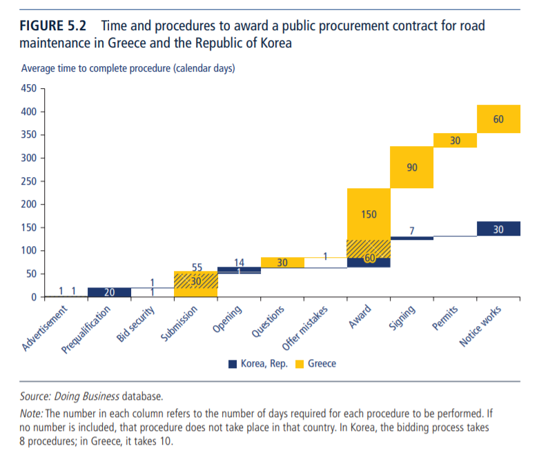
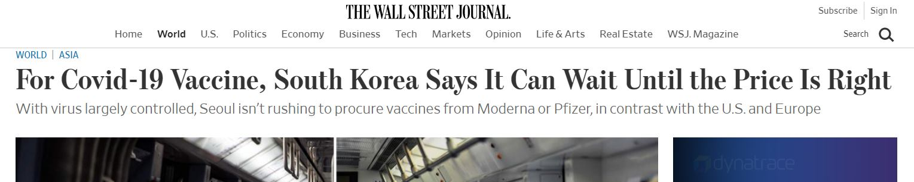

아스트라제네카의 백신은 왜 4딸라인가 ? - EU와의 면책 협약
게시: 2020-11-23T06:30:57+09:00
6줄 요약
- 아스트라제네카의 코로나-19 백신은 EU에 마진을 거의 붙이지 않고 가장 싼 가격에 공급됨 - 그 이유 중 하나는 백신 부작용에 관련된 법적 분쟁이 발생할 경우 일정 부분에 대해 면책특권을 받기로 EU와 합의했기 때문 - 역으로 말하면 다른 백신들은 그 가격에 부작용 발생시에 대비한 소송비용과 보상금을 포함한 가격이라는 이야기
- 관련된 법정 스릴러 소설 존 그리셤 '소송 사냥꾼' 꿀잼
- 우리나라가 6년째 '기업하기 좋은 나라' 순위 1위를 하고 있는 것도 이유가 있다
- 코로나 방역을 위해 송년회 등 연말 모임 갖지 마시고 집에서 가족과 함께... 그게 애국이고 이웃사랑이자 절세하는 방법입니다
지난 주 한국 언론에 현재 개발 중인 코로나-19 백신의 1회 접종분(dose) 가격 예상치가 보도되었습니다. 뜻밖에도 중국 회사인 Sinopharm 것이 제일 비쌌고, 모든 것이 비싸기로 유명한 나라들인 영국-스웨덴 회사 AstraZeneca의 것이 가장 쌌습니다. 아스트라제네카도 임상 3상 결과를 수일 내 공개할 것이라고 보도되었습니다만, 특히 아스트라제네카는 우리나라의 SK바이오사이언스와 코로나19 백신 위탁생산 계약을 맺은 곳이라서 더욱 주목을 받는 곳입니다. 모더나 같은 곳은 백신으로 수익을 내겠다는 입장인 것에 비해 아스트라제네카는 '팬데믹 동안 백신으로 돈 안벌겠다'는 입장이라고 알려져 있습니다.

(여기서도 사용되는 마법의 짤 "4딸라 !" 가격 출처 n.news.naver.com/article/018/0004790154 ) 그런데 아스트라제네카의 가격이 가장 싼 이유는 그런 인도주의적인 것 말고도 또 있더군요. 바로 백신의 잠재적 부작용 및 그에 따른 소송비용과 피해보상금 관련된 내용입니다. 이렇게만 써놓으니까 마치 아스트라제네카의 백신은 뭔가 불안정해서 부작용 피해가 속출하고 뭐 그럴 것처럼 읽힙니다만 절대 그런 것은 아닙니다. 모든 의약품에는 부작용이 있습니다. 부작용이 전혀 없는 약은 존재하지 않는 것으로 알고 있습니다. 이젠 잠잠해졌습니다만 최근 우리나라에서는 "독감 백신 접종 후 사망 88명" 뭐 그런 식의 무시무시한 기사 제목이 난무했습니다. 거기에 대해서 질병청의 해명은 "인과성 확인 안돼" 라는 식으로 보도되었고요. 이렇게만 보면 정말 엉터리 백신을 접종한 것 때문에 수십명이 죽었는데 질병청에서는 "증거가 없지 않느냐"라고 무책임한 해명을 한 것처럼 보입니다만, 그렇지 않다는 것을 이젠 다들 이해하시리라 믿습니다. 가령 그런 보도를 한 언론에 대해 "XX일보 읽은 뒤 매주 사망 3481명" 이라는 보도가 나온다면, 그게 가짜 뉴스이겠습니까 ? 돌아가신 분이 며칠전까지만 해도 분명히 멀쩡하셨는데 XX일보를 읽은 뒤에 갑자기 돌아가신 경우가 수천건에 달할 것입니다. 그리고 거기에 대해서 XX일보가 내놓을 수 있는 법적인 대응은 "인과성 확인 안돼" 밖에 없을 것이고요. 독감 백신은 1937년 최초로 개발된 이후 수십년간 사용해온 것입니다. 따라서 이 정도면 안심하고 맞으셔도 될 것으로 보입니다. 그런데도 불구하고, 코로나-19 백신은 워낙 짧은 기간 중에 개발되는 것이라서 부작용 비율이 과거에 비해서는 좀더 높을 것이라고 막연히 불안감을 가지고 있습니다. 그런데 아무리 가능성이 낮다고 해도, 만약 그런 백신을 맞고 사랑하는 가족이 죽는다면 여러분은 어떻게 하시겠습니까? 모든 것이 하나님의 뜻이라고 그냥 슬퍼하시는 분도 있겠고 정부에 대해 분노하시는 분도 있겠습니다만, 제약사에 대해 소송을 제기하는 경우도 꽤 있습니다. 특히 선진국일 수록 그런 소송이 많지요. 이번에 읽은 기사를 보니 아스트라제네카가 EU에게 이렇게 낮은 가격에 백신을 공급하기로 한 것에는 몇가지 이유가 있습니다만, 그 중 매우 큰 것이 "향후 백신 부작용에 따른 법적 분쟁 발생시 일정 부분에 대한 면책 특권"을 받기로 EU와 협약을 맺었기 때문이라고 합니다. 이 협약은 지난 8월에 맺은 것이라고 하네요. 이 협약 내용 중 주목할 점은 아래와 같습니다.

(기사 원본은 www.cnbc.com/2020/09/25/astrazeneca-gets-partial-immunity-in-low-cost-eu-vaccine-deal.html )
- 이 면책 특권 조약이라는 것이 백신으로 인한 부작용 사고에 대해 아스트라제네카가 책임을 지지 않는다는 것은 아니다. - EU 국민들은 아스트라제네카에 대해 소송을 제기할 수 있고, 그럴 경우 법적 방어의 책임은 EU 정부가 아니라 아스트라제네카에게 있다. - 다만 그런 소송으로 인한 비용, 즉 소송 비용과 잠재적 배상금은 일정 한도액까지만 아스트라제네카가 부담하고 나머지는 EU 정부가 부담하는 것이 면책 협약의 내용이다. - 그 한도를 초과하는 비용에 대해서는 EU가 부담을 하게 되는데, 어느 나라가 얼마씩 부담할 것인지에 대해서는 알려지지 않았다. - 글락소스미스클라인(GlaxoSmithKline)사와 합작으로 코로나-19 백신을 개발 중인 프랑스 제약사 사노피(Sanofi)의 경우엔 그런 면책 협약이 전혀 없다. - 대신 아스트라제네카는 EU에게 1회 접종분에 2.5유로라는 가격으로 계약했고, 사노피는 10유로로 계약했다. - 아스트라제네카나 사노피, 그리고 EU 정부 모두 구체적인 협약 내용에 대해서는 코멘트를 하지 않았다. 이 뉴스를 읽고 나니 전에 읽었던 존 그리셤(John Grisham)의 법정 스릴러 소설 '소송 사냥꾼' (The Litigators)가 떠올랐습니다. 여기서 간단히 줄거리를 1줄로 요약한다면, 시카고 변두리에서 어렵게 사무실을 유지하고 있는 시시한 길거리 변호사 3인방이 잘못된 정보에 근거해서 거대 제약사를 상대로 약물 부작용에 대한 소송을 제기했다가 온갖 봉변을 당하는 이야기입니다. 원래 존 그리셤은 법정에서의 사회 정의를 다소 진지하고 비장하게 그리는 소설을 많이 썼습니다만, 이 소설에서는 이 3인조 변호사들의 좌충우돌 모험담을 꽤 코믹하게 그렸습니다. 작가 본인 말로는 원래 다른 소설에서도 자신은 항상 개그 코드를 많이 집어넣었는데, 항상 출판사 편집인이 그런 개그 코드를 다 잘라냈지만, 이 소설에서는 그런 개그 코드가 다 살아남았다고 합니다. 저는 무척 재미있게 읽었습니다. 이 소설에서 제가 흥미롭게 생각한 부분은 아래와 같습니다.

1) 우리나라에서는 그런 제품 결함 소송이 '빽도 없고 돈도 없는 피해자' vs. '거대 기업'의 대결로 벌어지지만 미국에서는 '거대 로펌' vs. '거대 기업'의 대결로 벌어지는 양상입니다. 우리나라에서는 자동차이건 의약품이건 그 결함으로 인한 피해에 대해 기업이 나몰라라 하면 너무 분하고 억울한 피해자가 엄청난 각오를 하고 시간과 돈을 들여 소송을 제기하고, 변호사는 거기서 그냥 법률 서비스를 해주고 피해자로부터 돈을 받는 형태입니다. 그러나 미국에서는 변호사가 먼저 특정 제품에 대한 피해 사례를 수집해서, 그런 피해자들을 찾아다니며 소송을 제기하는데 동의해달라고 부탁하는 입장입니다. 그러니까 소송의 주체가 (물론 형식적인 것은 그렇지 않지만) 사실상 로펌이고, 피해자들은 거기에 이름만 올리는 것이더라고요. 그러니 피해자들은 소송 비용이나 그런 것들을 걱정하지 않고 심지어 법정에 나오지 않고 그냥 비디오 촬영으로 증언을 대체하기도 합니다. 소송에서 이기느냐 지느냐는 어디까지나 변호사들이 기업측 변호사와 죽어라 싸우는 모양새이고 피해자들은 소송 변호사들에게 '나한테 배상액 받아준다더니 언제 돈 줄거냐'라며 닥달하는 모양새입니다. 그런데 또 재미있는 부분이 그런 거대 소송전에서도 지역의 시시한 변호사들의 역할이 있다는 점입니다. 즉, 전국적으로 유통되는 의약품이나 자동차 관련 소송도 처음부터 연방대법원에 달려가는 것이 아니므로, 일단은 피해자가 거주하는 지방 법원에 소송을 제기하는데, 그러자면 그 지방의 피해자들을 찾아내어 자기를 소송인으로 하는 것에 동의해달라고 설득할 변호사들이 필요합니다. 그러니까 어떻게 보면 전국구 거대 로펌의 지방 영업사원, 그것도 비정규직 영업사원 역할을 하는 것입니다. 그런 소송에서 거대 로펌과 지역의 시시한 영업사원 역할의 변호사들이 맺어지는 과정도 흥미롭습니다. 이 소설 속에서는 '모 제약사의 무슨 약에 심각한 부작용이 있다더라, 그래서 모 로펌이 그 뒤를 조사 중이라더라'라는 소문을 듣고 시시한 변호사 3인방이 자기 지역에서 그 피해자들을 찾아내어 자신들을 소송대리인으로 해달라고 동의를 받아냅니다. 그런 뒤에 그런 거대 로펌을 컨택하여 '피해자를 우리가 확보했다' 라고 알리는 거지요. 그러면 거대 로펌의 사주를 받고 지역 변호사가 자기 지방 법원에 소송을 제기합니다. 미국에서는 소송 비용이 엄청나게 들어갑니다. 그게 꼭 비싼 변호사들을 쓰기 때문만은 아니더라고요. 가령 피해자가 정말 건강에 심각한 피해를 입었다는 것을 입증해야 하므로, 소송 당사자가 될 예비 피해자들 수십 명의 건강 검진부터 해야 하는데 그 비용만도 상당합니다. 또 그 피해가 그 특정 의약품으로 인한 것이라는 것을 증언해줄 전문가들을 적어도 2명 이상 동원해야 하는데, 그런 증언만 전문으로 하며 전국을 돌아다니는 의료 또는 약학 전문가들이 있습니다. 그런 사람들은 돈을 받고 그런 증언을 하는데, 그런 사람들에게 1인당 줘야 하는 비용이 소설 속에서는 대략 6만불인가 그랬습니다. 그 정도의 돈은 소설 속 시시한 지역 변호사의 1년 수입이더라고요. 우리나라 같으면 그런 비용을 다 피해자, 즉 원고가 부담해야 하는데, 미국에서는 그런 비용은 당연히 소송을 제기하는 변호사들이 부담하더군요. 대신 우리나라와는 달리, 미국에서는 소송에서 승리하면 그 배상금의 1/3을 변호사가 가져갑니다. 물론 소송에 쓰인 비용, 즉 건강검진비니 전문가 증언비용이니 하는 것들은 추가로 공제하고요. 대신 소송이 잘못 되더라도 피해자 원고는 손해볼 것이 없더군요.
그런데 이 소설에서는 이 3인방이 소송을 제기한 직후, 그들이 믿었던 거대 로펌이 문제의 그 약에는 사실 하자가 없다는 것을 알게 됩니다. 거대 로펌이 발을 뺀다는 것을 알고 경악한 이 3인방이 소송을 취하하려 하지만 이번에 거대 제약사가 '잘 걸렸다 본보기로 삼겠다' 라며 소송 취하를 거부하는데... 2) 미국 제품의 가격은 그런 잠재적 소송비와 배상금이 포함된 가격입니다. 모든 기업들은 잠재적으로 그런 제품 피해 소송을 당할 수 있고, 그에 대해 대비를 해야 합니다. 미국은 발에 걸리는게 변호사인데, 그런 수많은 변호사들이 멍하니 사무실에 앉아 억울한 피해자를 기다리는 것이 아니라 돈을 벌기 위해 눈이 벌게져서 길거리를 돌아다니고 인터넷을 검색하면서 소송을 걸 기업들을 찾고 있으니까요. 특히 제약사는 더욱 심합니다. 부작용이 없는 약이란 없고, 특히 새로 나온 신약은 수익도 많지만 새로 부작용이 발견될 가능성도 많으니까요. 그래서 의약품 가격을 정할 때는 당연히 잠재적인 소송비와 배상금을 고려해서 버퍼를 잡을 수 밖에 없습니다. 뿐만 아니라 제약사들은 상시적으로 그런 소송에 휘말리기 때문에 국가가 상비군을 유지하듯이 사내 법무실에도 변호사들을 꽤 많이 가지고 있고 그 인건비만도 꽤 상당한 모양입니다. 그렇게 기업을 상대로 소송을 기획하는 변호사들 덕분에 미국 소비자들은 보호를 받고 있습니다. 그런 법률 비용을 줄이는 가장 좋은 방법은 '하자 없는 제품'을 만드는 것이거든요. 그러니 기업들이 품질 관리, 특히 소비자 안전에 관련된 품질 관리를 정말 엄격하게 합니다. 그러나 어떻게 보면 눈에 돈독이 오른 변호사들 때문에 미국 소비자들이 피해를 본다고 볼 수도 있습니다. 부작용 없는 의약품은 존재하지 않으니, 특히 제약사들은 언젠가는 소송을 당할 준비를 갖춰야 합니다. 그런 준비는 결국 돈이고, 기업은 그런 비용을 약값에 포함시킬 수 밖에 없습니다. 결국 돈독 오른 변호사들에게 줄 돈을 소비자들이 부담하게 되는 것이지요. 위 기사에서 아스트라제네카는 2.5유로에, 사노피는 10유로에 계약을 하는 것도 비슷한 결과입니다. 3) 한국은 G20 국가들 중 기업하기 좋은 나라 1위입니다. 제 주변에도 사업하는 분들이 계십니다만, 그런 분 중 한 분에게 OECD 국가들 중에 사업하기 좋은 나라 순위를 매긴다면 우리나라는 몇 위 정도 할 것 같으냐고 여쭤보았습니다. 그 분 대답은 '우리나라는 복지부동 공무원들과 온갖 규제, 그리고 좌파 정부 때문에 순위가 낮을 거다 한 30위 정도 하지 않을까' 하셨는데, 제가 실제 순위를 말씀드리니 엄청나게 충격을 받으시더라고요. 세계은행(World Bank)에서 조사 발표한 ‘2019년 기업환경평가’(Doing Business 2020)에서 우리나라는 OECD 국가 중 3위, 세계 전체 190개 국 중에 5위, 그리고 G20 국가들 중에서는 1위입니다. 6년째 1위를 지키고 있습니다.

(Full report는 documents1.worldbank.org/curated/en/688761571934946384/pdf/Doing-Business-2020-Comparing-Business-Regulation-in-190-Economies.pdf 여기서도 일본과 비교하는 이 못된 버릇 ㅋ.... 일본은 29위로서 러시아보다도 낮네요.)

(가령 '정부와 도로 유지보수 공사계약하는데 걸리는 시간'에서 가장 수월하게 처리되는 나라가 뜻밖에도 한국...)
그렇게 높은 평가를 받은 이유 중 하나가 바로 법적 분쟁 해결입니다. 법적분쟁 해결, 전기공급 등의 분야에서 모두 세계 2위로 상위권을 유지했지만 창업(33위), 자금조달(67위) 분야에서는 상대적으로 낮은 순위를 기록했더군요. (이와 관련된 한글 기사 www.donga.com/news/Economy/article/all/20191024/98047461/1 ) 우리나라에서 기업들을 위한 법적분쟁 해결 부문의 점수가 높은 것이 판사님들이 훌륭해서일까요 ? World Bank report에는 '한국은 기업이 소송 걱정 없이 기업 활동 할 수 있는 나라'라고 씌여있지는 않습니다. 참고로 사망자만 수백명의 끔찍한 피해를 낸 가습기 살균제의 가해 기업이 현재 어떻게 되었는지 생각해보면... 미국에서 그런 일이 벌어졌다면 어땠을까요 ? 미국은 의료비가 살인적으로 높다고 하지요. 우리나라 의사분들은 우리나라의 낮은 의보수가 때문에 다들 불만이 엄청나게 많으신 것으로 알고 있습니다. 그러나 의료 사고가 났을 때의 법적 분쟁이 보통 어떻게 처리되는지 보면 우리나라 의사분들은 엄청난 보호를 받는다고 볼 수도 있습니다. 이번에 코로나-19 백신이 우리나라에서는 어느 회사와 어떤 조건으로 계약될지 모르겠습니다만, 저런 부작용에 따른 법적 소송까지 생각해보면 (보통 그러듯이) '무조건 일본보다 빨리, 일본보다 더 많이'를 목표로 할 것이 아니라 정말 신중하게 결정해야 할 문제 같습니다. 그리고 그렇게 신중하게 계약을 하려면 코로나 방역에 여유가 있어야 합니다. 당장 코로나로 사람이 무더기로 죽어나가는 나라는 제약사와의 협상에서 불리한 처지가 될 수 밖에 없습니다. 여러분, 정말 연말연시라고 들뜨지 말고, 송년회 잡지 말고, 제발 집에서 가족과 함께 따뜻한 연말 보냅시다. 그게 애국하는 길이고 이웃사랑 실천이자 우리가 세금을 적게 낼 수 있는 길입니다.
